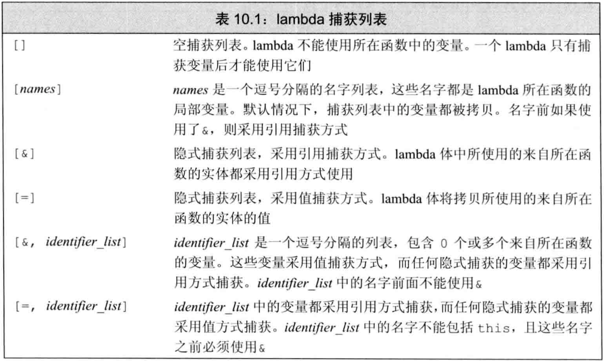
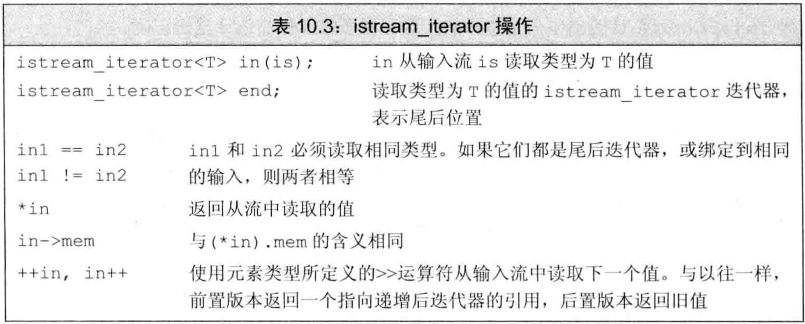
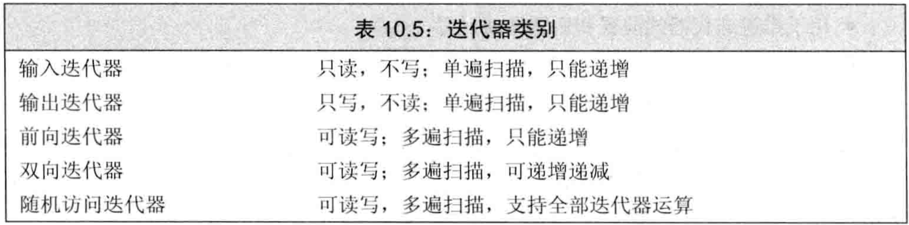
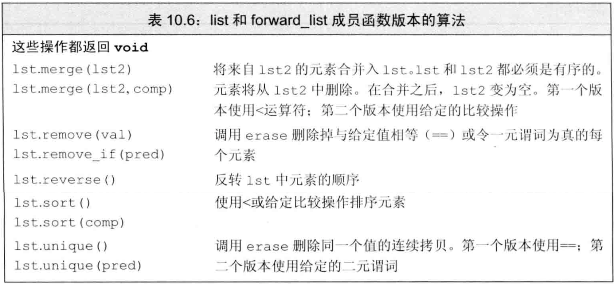
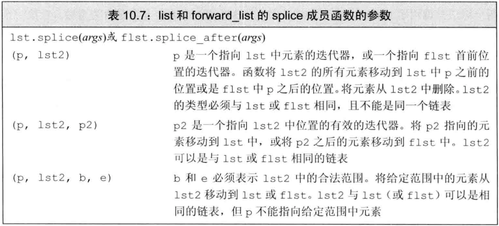

C++ primer 第10章 泛型算法
文章目录
- 标准库未给容器添加大量功能，而是提供一组独立于容器的
泛型算法算法：它们实现了一些经典算法的公共接口泛型：它们可用于不同类型的容器和不同类型的元素
- 利用这些算法可实现容器基本操作很难做到的事，例如查找/替换/删除特定值、重排顺序等
概述
- 大多数算法定义在
algorithm头文件中，另外一组数值算法定义在numeric头文件中 - 标准库算法不直接操作容器，而是遍历迭代器范围
- 指针就像内置数组上的迭代器，故泛型算法也可操作内置数组和指针
find算法：- 作用：将范围中每一个元素与给定值比较，返回第一个等于给定值的元素的迭代器，如果没有匹配则返回该范围的尾后迭代器。
- 用法：有3个参数，前2个是输入范围，第3个是给定值。
- 实现：调用给定值类型的
==算符来比较。
- 算法只依赖迭代器来访问元素并在范围中推进，不依赖于容器操作。但迭代器依赖元素类型上定义的算符，如
==、<等 - 算法不会改变容器大小。它可能改变元素值或移动元素，但不会添加或删除。
- 标准库定义了
插入迭代器，给它们赋值时会在容器上插入。算法操作这样的迭代器时可完成插入元素的效果。 - 一些算法提供了接口，允许使用自定义的
谓词来代替默认算符 count算法：- 作用：将范围中每一个元素与给定值比较，返回给定值在范围中出现的次数。
- 用法：有3个参数，前2个是输入范围，第3个是给定值。
- 实现：调用给定值类型的
==算符来比较。
初识泛型算法
- 附录A中列出所有算法
输入范围：大多标准库算法都对一个范围内的元素操作，这个范围称为输入范围。接受输入范围的算法总是用前两个参数来表示输入范围。- 多数算法遍历输入范围的方式相似，但使用元素的方法不同（是否读，是否写，是否重排等）。
只读算法
只读算法只读取输入范围的元素，不改变它们。如上一节的find和count- 使用只读算法，最好用cbegin/cend
accumulate算法（定义于numeric）：- 作用：对范围中元素求和，再加上给定值，返回求值结果。
- 用法：有3个参数，前2个是输入范围，第3个是给定值。
- 实现：调用给定值类型的
+算符来求和。
- 例子：算法严格使用给定值的操作符
|
|
equal算法：- 作用：确定两序列的值是否相同。所有元素都相等时返回true，否则false
- 用法：有3个参数，前2个是第一个序列的输入范围，第3个是第二个范围的首迭代器。
- 实现：调用
==算符来比较，元素类型不必严格一致。
- 某些算法接受单一迭代器来指定第二个序列，这些算法都假定第二个序列至少和第一个序列一样长
写容器元素的算法
- 可对序列中元素重新赋值，要求原序列大小不小于要写入的元素数目。算法不执行容器操作，故不可改变序列大小
fill算法：- 作用：用给定值填满输入范围
- 用法：有3个参数，前2个是输入范围，第3个是给定值。
- 操作两序列的算法不要求两序列的容器相同，但要求元素可操作
- 操作两序列的算法分为两种：
- 接受3个迭代器，前两个表示第一个序列的范围，第三个表示第二个序列的起始。总是假定第二个序列至少和第一个序列一样长
- 接受4个迭代器，前两个表示第一个序列的范围，后两个表示第二个序列的范围
fill_n算法：- 作用：用给定值填满长为n的区间
- 用法：有3个参数，第1个代表序列起始的迭代器，第2个是序列长度的计数值，第3个是填入的给定值。
- fill_n假定长为n的空间总是有效的，类似指针运算。算法不会改变容器的大小。
插入迭代器：给插入迭代器赋值会向容器中插入元素，即真正改变容器的大小。- 通过给插入迭代器赋值，算法可保证容器中总有足够的空间
back_inserter函数定义于iterator头文件中，它接受一个指向容器的引用，返回该容器的一个插入迭代器。通过此迭代器赋值时，赋值符会调用容器类型的push_back来添加元素- 例子：算法中使用back_inserter
|
|
copy算法：- 作用：将输入范围的值拷贝到目标序列，返回目标序列的尾后迭代器
- 用法：有3个参数，前2个是输入范围，第3个是目标序列的起始位置
- 很多算法提供
copy版本，即计算新元素的值后，不放入原来的序列，而是放入一个新序列中。 replace算法：- 作用：将序列中所有等于给定值的元素换为另一个值
- 用法：有4个参数，前2个是输入范围，后2个分别是要搜索的值和新值
replace_copy算法：- 作用：将序列中所有等于给定值的元素换为另一个值，放入新序列，原序列不变。
- 用法：有5个参数，前2个是输入范围，第3个是输出序列的首迭代器，最后2个分别是要搜索的值和新值
- 例子：replace和replace_copy
|
|
重排容器元素的算法
- 可对容器中元素重新排列顺序
sort算法：- 作用：重排输入序列的元素使其有序
- 用法：有2个参数，是输入范围
- 实现：调用序列元素类型的
<算符
unique算法：- 作用：重排输入序列，消除相邻重复项。返回消除后的无相邻重复值的范围的尾后迭代器
- 用法：有2个参数，是输入范围
- unique不真正删除元素，只是将后面的不重复值前移来覆盖前面的重复值，使不重复值在序列前部。
- unique将不重复元素向首部集中，尾部（返回迭代器之后）的元素值是未定义
- 真正删除元素需要使用容器操作
- 例子：消除重复单词
|
|
定制操作
- 对于使用元素的
==、<等算符的算法，标准库允许在执行算法时用自定义操作代替默认算符，而不需要在类型中重载。
向算法传递函数
谓词：是一个可调用的表达式，其返回值可用作条件（即true/false）。按照参数的数量分为一元谓词和二元谓词- 接受谓词的算法用该谓词代替默认的算符来操作元素，故元素类型必须可转为谓词接受的参数类型。例如，接受二元谓词的sort用该谓词代替
< stable_sort是稳定排序，即维持相等元素的原有顺序
lambda表达式
lambda应用的场景：函数接口已固定，但要传入额外的参数，可用lambda的捕获列表。例如谓词中要获取局部变量时。find_if算法：- 作用：对输入范围的每个元素调用给定谓词，返回第一个使谓词非0的元素的迭代器
- 用法：有3个参数，前2个是输入范围，第3个是一元谓词
可调用对象：一个对象或表达式，若能使用调用运算符()，就是可调用的- 4种可调用对象：
函数、函数指针、重载了调用算符的类、lambda表达式 lambda表达式：是一个可调用的代码单元，即一个未命名的内联函数。它有捕获列表、返回类型、形参列表、函数体，但可定义在函数内部（函数不可）- lambda表达式形式:
[capture list](parameter list) -> return type {function body}- capture list是
捕获列表，是lambda所在函数中定义的局部变量的列表 - parameter list、return type、function body与函数一样
- lambda必须用
尾置返回 - 可忽略形参列表和返回类型，但必须有捕获列表和函数体
- 若函数体不是单一return语句，则必须指定返回类型（否则为void）
- capture list是
- 可用变量定义的形式定义lambda，用函数调用的方式使用lambda
- 例子：使用lambda
|
|
- lambda忽略返回类型时使用类型推导。如果函数体是单一return语句则可推出类型，否则返回void。
- 调用lambda时用实参初始化形参的方式和函数相同，但
lambda不可有默认实参 - lambda将局部变量包含在捕获列表中来访问它们，只有被捕获到的局部变量才可在函数体中被使用。但只有
局部非static变量才需要捕获，lambda可直接使用定义在当前函数之外的名字和局部static变量 for_each算法：- 作用：对输入范围的每个元素调用给定的可调用对象
- 用法：有3个参数，前2个是输入范围，第3个是可调用对象
- 例子：计数并按字典序打印长度>=给定值的字符串
|
|
lambda捕获和返回
lambda实际是匿名类：定义lambda时，编译器生成一个与其对应的未命名的类类型- 向函数传递lambda时，同时定义了一个新类型和该类型的一个对象，传递的参数就是该对象。用auto定义一个lambda初始化的变量时，该变量也是这种对象。
- 从lambda生成的类都有一个数据成员对应捕获到的变量。lambda的数据成员在创建时被初始化，即
被捕获的变量用于初始化lambda匿名对象的成员 - lambda捕获变量的方式可用
值捕获和引用捕获 值捕获存在拷贝，且值捕获的变量是在lambda创建（lambda对象构造）时被拷贝，而不是调用时拷贝，故创建lambda后修改捕获变量不影响lambda中的值。- 使用
引用捕获时必须确保lambda执行时被捕获变量存在。例如，从函数中返回lambda时不可用引用捕获。 - 最佳实践：尽量减少捕获的变量，且避免捕获指针/引用
- 例子：值捕获的变量会被拷贝，引用捕获的变量不会
|
|
隐式捕获：可让编译器根据lambda函数体中的代码来推断要捕获哪些变量。- 使用隐式捕获，需在捕获列表中写
&或=，分别对应引用捕获和值捕获 - 可混合使用隐式捕获和显式捕获，只需在捕获列表中写
&或=，再写显式捕获的变量，要求：- 捕获列表第一个元素必须是
&或=，指定默认为引用/值捕获 - 显式捕获的变量必须使用与隐式捕获不同的方式。即隐式引用捕获，则显式必须为值捕获，反之亦然
- 捕获列表第一个元素必须是
- 例子：混合使用隐式捕获和显式捕获
|
|
- 表10.1是lambda捕获列表可能的状态 
可变lambda：普通lambda不会改变值捕获的变量的copy的值，但可变lambda可改变值捕获的变量的copy的值，只需在参数列表后使用关键字mutable- 例子：可变lambda
|
|
- 若lambda函数体包含return之外的任何语句，则编译器推断它返回void，返回void的函数不能返回值，除非手动指定返回类型
- 为lambda指定返回类型时，必须使用
尾置返回 transform算法：- 作用：对输入范围的每个元素调用可调用对象，将返回值依次写入目标序列
- 用法：有4个参数，前2个是输入范围，第3个是目的序列的首迭代器，第4个是可调用对象
- transform写入的目标序列和输入序列可以相同，即可以向原址写入
- transform和for_each的区别：
- transform可进行非原址写，for_each不可（除非在可调用对象内写非原址目标）
- transform通过可调用对象的返回值写入，for_each在可调用对象内部操作
- 例子：lambda的返回值
|
|
参数绑定
- 对于少数地方使用的简单操作用lambda，而多次调用时应该定义函数。
- 若lambda的捕获列表为空，可用函数替换它。但对于有捕获列表的lambda，很难用函数替换。因为不能在函数中定义函数，导致不能在不修改形参的前提下使用局部变量（例如标准库算法中的可调用对象，其形参必须固定）。
- 在
functional头文件中定义了bind函数，可看作通用的函数适配器。它接受一个可调用对象，生成新的可调用对象来适应原对象的参数列表（即改变可调用对象的调用接口） - 调用bind的形式为：
auto newCallable=bind(callable,arg_list);- callable是可调用对象，arg_list是逗号分隔的参数列表，对应callable的参数
- 调用newCallable时，是在用arg_list的参数调用callable
- arg_list中的参数可包含占位符，即
_n，其中n是传入newCallable的第n个参数
- 名字
_n都定义于placeholders命名空间中，该命名空间又定义于std命名空间。同时，placeholders命名空间定义于functional头文件 - 使用
using namespace namespace_name来说明希望所有来自namespace_name的名字都可在程序中直接使用 - 例子：使用bind
|
|
- 默认下，bind的非占位符参数被
拷贝到可调用对象中，类似lambda中的值捕获 - 用
ref函数可实现lambda中的引用捕获 ref函数返回一个对象，该对象中包含输入的引用，且可拷贝。若需要包含const引用，则应用cref函数。ref和cref也定义于functional头文件中- 例子：用bind和ref捕获引用
|
|
- 在C++11之前，标准库定义了
bind1st和bind2nd来绑定第一个或第二个参数。由于局限性太强，在C++11中被deprecated
再探迭代器
iterator头文件中定义了额外的迭代器：插入迭代器：被绑定到一个容器，赋值时向容器中插入元素流迭代器：绑定到输入输出流，用于遍历这个流反向迭代器：向后而不是向前移动，除forward_list外的所有标准库容器都有反向迭代器移动迭代器：不是拷贝元素，而是移动元素
插入迭代器
插入器是一种迭代器适配器，它接受一个容器，生成一个迭代器，可通过该迭代器向容器添加元素。- 通过插入迭代器赋值时，该迭代器调用对应的容器操作来向给定位置插入元素
- 插入迭代器支持的操作见表10.2

- 有3种插入迭代器，区别在于插入的位置：
back_inserter函数：创建一个使用push_back的迭代器。front_inserter函数：创建一个使用push_front的迭代器。inserter函数：创建一个使用insert的迭代器。它接受迭代器作为第二个参数来指定位置。使用返回的迭代器时，插入的元素在指定位置之前
- 只有容器本身支持push_back/pus*h_front/insert，才可用back_inserter/front_inserter/inserter
- inserter等价于两步操作：先
insert后++：
|
|
- 反复调用front_inserter插入元素的顺序与插入顺序相反，而back_inserter/inserter插入元素的顺序与插入顺序相同
- 插入迭代器的
*和++算符不会对迭代器做任何事。
iostream迭代器
- iostream类型不是容器，但也可用迭代器操作：
istream_iterator：读输入流ostream_iterator：写输出流
- 创建流迭代器时需在模板参数中指定读写类型，使用时调用该类型的
<<、>>算符。流迭代器将其对应的流当作该类型的元素序列处理 - 创建istream_iterator时，可将其绑定到一个流。也可默认初始化为
尾后迭代器。 - 对于绑定到流的迭代器，一旦关联的流遇到文件末尾或IO错误，则迭代器等于尾后迭代器
- 例子：使用istream_iterator
|
|
- 标准库只保证在第一次解引用输入流迭代器之前完成从流中读数据的操作，而不一定在绑定时立即读取。如果从两个不同对象同步地读取一个流，或是创建流迭代器还未使用就销毁，则何时读取是重要的。
- istream_iterator的操作见表10.3 
- 例子：用算法操作流迭代器
|
|
- 创建ostream_iterator时有可选的第二个参数，必须是C风格字符串，在输出每个元素之后都输出该字符串。
- ostream_iterator创建时必须绑定到流，不允许默认初始化
- ostream_iterator的
*和++算符不会对迭代器做任何事，因为输出操作自动递增。 - ostream_iterator的操作见表10.4

- 例子：使用ostream_iterator
|
|
反向迭代器
反向迭代器：在容器中从尾元素向首前元素移动，++向后移动，--向前移动- 除forward_list外的容器都有反向迭代器。可通过
rbgein、crbegin、rend、crend函数来得到指向首前元素和尾元素的迭代器，如图10.1 ![fig_10_1][fig_10_1_fig] - 反向迭代器的作用是让算法透明地向前或向后处理容器，例如向sort传递反向迭代器可反向排序而不需修改算法或算符
- 例子：用反向迭代器做反向排序
|
|
- 反向迭代器只能从同时支持
++和--的迭代器来产生。故forward_list和流迭代器都无反向迭代器 - 反向迭代器的
base成员函数返回它对应的正向迭代器。特别的，rbegin对应的正向迭代器是end，rend对应的正向迭代器是begin - 反向迭代器比它对应的正向迭代器左偏一个位置，原因是左闭右开区间的特性。为了使
[rit1,rit2)和[rit1.base(),rit2.base())表示的元素范围相同 - 从正向迭代器初始化反向迭代器，或是给反向迭代器赋值时，结果迭代器与原迭代器指向的元素不相同。
- 例子：使用反向迭代器
|
|
- 上例中
[line.crbegin(),rcomma)和[rcomma.base(),line.cend())表示的范围相同，只是方向相反，如图10.2 ![fig_10_2][fig_10_2_fig]
泛型算法结构
- 算法最基本的特性是要求迭代器可提供哪些操作（即可使用何种迭代器），这可分为5个迭代器类别，每个算法都会指明需要的迭代器至少是哪一种
- 表10.5是迭代器的5种类别 
- 另一种算法的分类方式是按照读/写/重排元素来分类
- 算法共享一组形参规范和一组命名规范
5类迭代器
- 迭代器按照支持的操作来分类，形成一种层次。
- C++标准指明每种算法需要的迭代器的最小类别（即至少要支持的操作）。但对算法传递错误的迭代器经常不会被编译器警告
输入迭代器- 操作：只可读不可写
- 算符：
==、!=、++、*、-> - 访问：只能顺序访问，不保证迭代器的状态有效并再次访问元素。故只能单遍扫描
- 例子：find和accumulate要求输入迭代器，isrteam_iterator是输入迭代器
输出迭代器- 操作：只可写不可读
- 算符：
++、* - 访问：只能赋值一次，即只能单遍扫描
- 例子：用作目的位置的迭代器通常是输出迭代器，如copy的第三个参数，osrteam_iterator
前向迭代器- 操作：可多次读写元素
- 算符：
==、!=、++、*、-> - 访问：可多次读写元素，可保存迭代器状态，可对序列多次扫描
- 例子：replace要求前向迭代器，forward_list的迭代器是前向迭代器
双向迭代器- 操作：可正反方向多次读写元素
- 算符：
==、!=、++、--、*、-> - 访问：可多次读写元素，可保存迭代器状态，可对序列多次扫描
- 例子：reverse要求双向迭代器，除forward_list外的容器迭代器都是双向迭代器
随机访问迭代器- 操作：常量时间内随机读写任意元素
- 算符：
==、!=、++、--、*、->、<、<=、>、>=、+、+=、-、-=、[] - 访问：可多次读写元素，可保存迭代器状态，可对序列多次扫描
- 例子：sort要求随机访问迭代器，array/deque/string/vector的迭代器、数组的指针都是随机访问迭代器
算法形参模式
- 大多数算法的形参具有下列4种形式之一：
alg(beg,end,others);alg(beg,end,dest,other);alg(beg,end,beg2,other);alg(beg,end,beg2,end2,other);
- 参数：
- beg和end表示操作的输入范围
- dest是算法可写入目的位置的迭代器，假定写入任意多个元素都安全。因此dest经常被绑定到插入迭代器或输出流迭代器
- beg2表示操作的第二个输入范围，假定从beg2开始的序列至少和beg到end的长度一样长
- beg2和end2表示操作的第二个输入范围，对这种指定没有限制
算法命名规范
- 接受谓词的算法和不接受额外参数的算法通常被重载，不需另外命名
_if版本：接受一个谓词代替给定元素值- 例子：_if版本算法
|
|
_copy版本：输出到目标位置，而不是原址- 例子：_copy版本算法
|
|
- 同时_if和_copy
- 例子：同时_if和_copy
|
|
特定容器算法
- 链表类型
list和forward_list定义了成员函数形式的算法，如sort、merge、remove、reverse、unuque。- 通用sort要求随机访问，不可用于链表
- 其他算法的通用版本可用于链表，但交换元素代价太高。链表可交换指针而不是交换元素，可提高性能。
- 对于链表类型list和forward_list，应优先使用成员函数版本的算法
- 表10.6是链表的成员函数版本的算法 
- 链表类型特有的算法有
splice，用于拼接链表，该算法没有通用版本 - 表10.7是链表splice的形参 
- 链表特有算法与通用算法的一个区别是：链表特有的算法会改变底层容器，通用算法不会